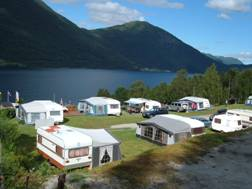

Velkommen til Nesjartun Camping
Nesjartun Camping er ei lita familiedriven bedrift ved enden av Hornindalsvatnet. Plassen ligg ved Rv15, ca. 8 km fra Nordfjordeid i retning Stryn. Vi tilbyr hytter, plass til telt, vogner og bubilar og utleige av båtar.
På Nesjartun bur du midt i Nordfjord, ein ideell stad for dagsturar i alle retningar, Måløy, Selje og Vestkapp, Stryn og Briksdalen, Geiranger, Ålesund og Runde for å nemne nokre.
Kontakt Oss:
Tlf: 57862732
post@nesjartun.no
Magne: 91602732
Karin: 90635695